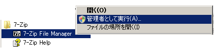
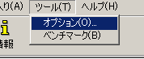
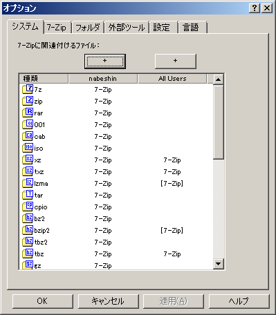

zip、7z、rarファイルの関連付け
zip、7z、rarなどの圧縮ファイルをダブルクリックしたときなどに自動的に7-Zipが起動するようにするには各ファイル（ファイル名末尾の拡張子）に対して関連付けを行います。通常はインストール時にある程度は設定されていますが、インストール方法によってはできていない場合もあるので、一度確認しておくことをお勧めします。
管理者権限で7-Zipを起動する
7-Zip上から各ファイルの関連付けを行うには、管理者権限で起動させます。具体的にはメニューにある「7-Zip File Manager」を起動する際に、ただ選択するのではなく、右クリックから「管理者として実行」を選択します。
7-Zipが起動したらメニューの「ツール」－「オプション」を選択します。
オプションのダイアログが起動したら、関連付けするファイルを設定していき、「適用」もしくは「OK」ボタンを押すと設定されます。
画面は開発アルファ版の9.23以降のインターフェイスです。9.23以降は各ユーザーの設定とAll Users（システム全体）の設定も選択的に行えるようになっています。9.20以前の場合はチェックボックスにチェックを入れていけば設定できます。
OSDN Project